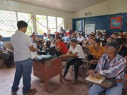

Organizaciones locales que ofrecen apoyo en el desarrollo de habilidades de
comunicacion asertiva:
Busca organizaciones locales que se especialicen en el desarrollo de habilidades de comunicacion asertiva. Por ejemplo,
muchos centros comunitarios, universidades, y organizaciones sin fines de lucro ofrecen talleres y cursos sobre
comunicacion efectiva. Organizaciones como Toastmasters International tienen capitulos locales donde puedes practicar
tus habilidades de comunicacion y liderazgo en un entorno de apoyo. Tambien, busca en tu area grupos como el YMCA
o centros de recursos familiares que ofrezcan programas de desarrollo personal.

Grupos de apoyo y comunidades en linea donde se comparten experiencias y
consejos sobre comunicacion efectiva:
Unete a grupos de apoyo y comunidades en linea para compartir experiencias y obtener consejos sobre comunicacion
efectiva. Plataformas como Reddit tienen subreddits como r/communication y r/socialskills donde los miembros discuten
tecnicas y comparten historias personales sobre el desarrollo de habilidades de comunicacion. Ademas, grupos de Facebook
dedicados a la comunicacion asertiva y efectiva ofrecen un espacio para conectarse con personas de ideas afines. Otra
opcion es participar en foros de desarrollo personal en sitios web como Psych Central o LinkedIn, donde profesionales
y entusiastas intercambian consejos y recursos.